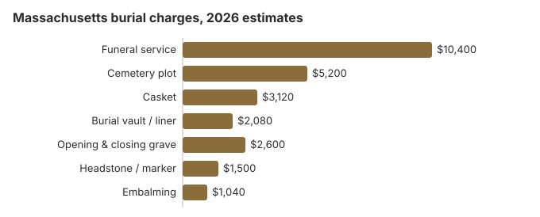

Burial Costs in Massachusetts (2026)
Massachusetts is an expensive state to be buried in, largely because cemetery land near its cities costs so much. Our estimate for a complete burial is $23,900 to $28,400: about $10,400 for the funeral home's service, $5,200 for a plot, and $500 to $5,000 for a headstone, before the casket, vault and grave opening. Older town and church cemeteries are often the best place to bring that down.
The Massachusetts Burial Bill, Line by Line
| Charge | Massachusetts estimate | Usual range |
|---|---|---|
| Funeral service | $10,400 | $7,800 – $13,520 |
| Cemetery plot | $5,200 | $2,600 – $10,400 |
| Casket | $3,120 | $1,040 – $8,320 |
| Burial vault / liner | $2,080 | $800 – $10,000 |
| Opening & closing grave | $2,600 | $500 – $3,000 |
| Headstone / marker | $1,500 | $500 – $5,000+ |
| Embalming | $1,040 | $500 – $1,500 |
About these figures: they come from our own Massachusetts cost model. Nobody surveyed local funeral homes or cemeteries to produce them, so treat them as a guide to what to ask, not a price you will be charged. The model is explained in our method and its limits in the site disclaimer.
State sources: funeral consumer fact sheet.

Adding every cemetery fee to the funeral home's charges, a Massachusetts burial comes to $23,900 to $28,400 in our model; the casket and the cemetery decide most of the spread.
Kinds of Burial Available in Massachusetts
Bringing Down a Massachusetts Burial Bill
Where a Massachusetts family usually has room to save:
- Call several cemeteries. A cemetery isn't bound by the federal price-list rule the way a funeral home is, yet in practice most in Massachusetts will mail or email their fees.
- Ask what winter changes. Frozen ground can add a winter surcharge at some Massachusetts cemeteries, and others wait for spring and store the casket meanwhile.
- Price town and church cemeteries. Massachusetts has many municipal and religious cemeteries, and they are worth comparing with corporate memorial parks.
- Look beyond Boston. Plots in counties farther from Boston can cost much less for a plot and still be easy to visit.
Land Prices and Older Massachusetts Cemeteries
Land is the reason Massachusetts plots cost what they do: cemetery ground in the crowded eastern counties is expensive. Many older municipal and religious cemeteries, though, sit on land given or endowed generations ago, and their prices can still show it. Driving 15 minutes farther to one of them can save $2,080 or more on the cemetery bill, by our estimate. When calling, ask whether the town limits plots to residents, since some municipal cemeteries do.
Burial Resources
- Funeral Consumers AllianceNonprofit consumer advocacy for funeral pricing
- Headstone & Monument GuideCosts, types, and buying tips
- Green Burial OptionsEco-friendly and natural alternatives
- Best Online Casket RetailersCaskets bought online often cost less
- Best Burial InsuranceCompare plans to cover burial expenses
Compare Funeral Costs
- Average Funeral Cost in 2026National cost breakdown with real prices
- Cremation vs. Burial Cost ComparisonSide-by-side price comparison to help you decide
- Funeral Cost BreakdownEvery line item explained: know what you're paying for
- Cheapest Funeral OptionsLower-cost alternatives, with typical price ranges
- Direct Cremation: Most Affordable OptionNFDA 2023 median $2,645 with a family-supplied container (latest available)
- How to Compare Funeral PricesStep-by-step guide to getting the best price
Frequently Asked Questions
How much does a Massachusetts burial cost in all?
Our Massachusetts estimate: about $10,400 for the funeral home's service, $5,200 for a plot, $3,120 for a casket, $2,080 for a vault and $2,600 to open and close the grave, plus $500 to $5,000 for a headstone. In total, $23,900 to $28,400.
Do Massachusetts cemeteries require a vault?
Usually, though by cemetery rule rather than state law: an outer container keeps the grave from sinking. In Massachusetts a vault or liner runs from about $800 to $10,000, and many cemeteries take a basic liner.
What is the cheapest kind of burial in Massachusetts?
Direct burial, with no embalming, viewing or service, is the lowest-cost burial a Massachusetts funeral home sells. A natural burial, in a biodegradable container and without embalming, usually costs a little more and is offered by more cemeteries each year.
How should I compare Massachusetts cemeteries?
Ask each cemetery for written prices on the plot, the opening and closing and its vault rule, since all three vary. Funeral homes owe you a price list under federal rules; cemeteries usually do not, though asking rarely hurts. For a veteran, the VA national cemetery taking burials in the state is Massachusetts National Cemetery.
What gets added on top of a Massachusetts burial estimate?
Usually a few things. Death certificate copies, newspaper notices and flowers are bought on your behalf and passed through at cost, and none of them is in our $23,900 to $28,400 figure.
Can you have a green burial in Massachusetts?
In some places. Natural burial grounds are not found everywhere in Massachusetts, and some cemeteries set aside a hybrid section instead. Read our green burial guide, then call nearby cemeteries to ask what they currently allow.
More for Massachusetts
New burial ground in Massachusetts needs town approval
Massachusetts does not let land become a burial ground on the owner's say-so. Apart from a tomb on private land used only by the owner's family, new land can be used for burial only with permission from the town, or from the mayor and aldermen in a city. The local board of health has to approve the location in writing first, after notice to everyone interested and a hearing (M.G.L. c. 114, § 34; checked October 29, 2026).
The same approval covers extending an existing cemetery, and the board keeps a description of the approved land in its records. An owner who allows a burial in breach of the rule can forfeit $20 to $100 for each interment where the town has given the required notice. A family hoping to bury on its own land should therefore start with the board of health, well before a death.
Massachusetts burial regulators and public help
Funeral homes handling burials in Massachusetts are licensed by the Massachusetts Board of Embalming and Funeral Directing (617-701-8628). That board does not regulate cemeteries, which in Massachusetts operate separately from funeral homes and may be municipal, private, corporate or religious. The state's funeral consumer fact sheet tells families with a cemetery problem to start with the cemetery's management and the local board of health where the cemetery is located.
The Funeral Consumers Alliance does not list Massachusetts among the nine states that require a funeral director, so a Massachusetts family can arrange a burial without one. Whoever handles it still needs the burial permit, and must follow the chosen cemetery's own rules. The cremation waiting period does not touch a burial, though a 48-hour wait applies if the family switches to cremation (M.G.L. ch. 114, § 44).
Help with the cost
The Department of Transitional Assistance pays up to $1,100 toward a burial, but only when the whole funeral and burial bill is $3,500 or less, which means the plot and grave opening have to fit under that limit too. (Source: Massachusetts DTA.)
Veterans eligible for a national cemetery are buried there free, marker included. Massachusetts National Cemetery (508-563-7113) is in Bourne on Cape Cod; the state runs two more, at opposite ends of Massachusetts: the State Veterans Cemetery in Agawam near Springfield (413-821-9500) and in Winchendon on the New Hampshire line (978-297-9501) (source: VA National Cemetery Administration).
What to do next in Massachusetts
- Request a written cemetery quote covering the grave, its opening, the container rule and any marker fee.
- Find out whether winter means a receiving vault and, if so, what that adds.
- Before applying to DTA, add the cemetery charges to the funeral bill; the $3,500 limit counts both.
- Have the veteran's discharge papers ready when you call the Bourne cemetery.
- If a price list is missing or wrong, the Board takes calls at 617-701-8628.